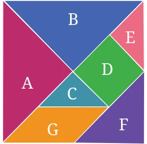
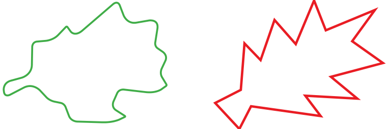
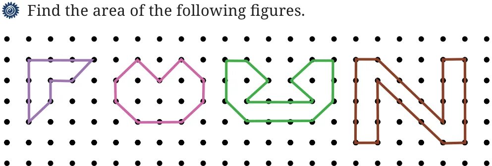
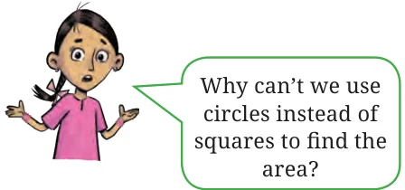
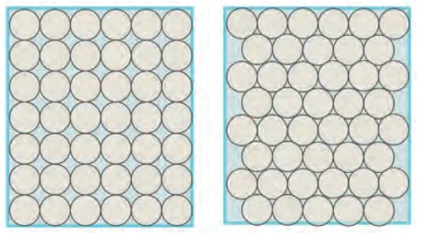
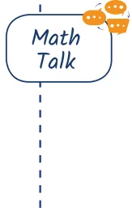

<!DOCTYPE html>
<html lang="en">
<head>
<meta charset="UTF-8">
<meta name="viewport" content="width=device-width,initial-scale=1">
<title>Figure it Out — Perimeter and Area</title>
<meta name="description" content="Class 6 Mathematics · Perimeter and Area · Figure it Out">
<link rel="icon" href="data:image/svg+xml,<svg xmlns='http://www.w3.org/2000/svg' viewBox='0 0 100 100'><text y='.9em' font-size='90'>📘</text></svg>">
<link rel="stylesheet" href="../../../assets/book.css">
<link rel="stylesheet" href="https://cdn.jsdelivr.net/npm/katex@0.16.11/dist/katex.min.css" crossorigin="anonymous">
</head>
<body>
<header class="topbar">
<div class="topbar-in">
  <div class="crumb">
    <span class="c1"><a href="../../../index.html">Library</a> · <a href="../../index.html">Class 6 Mathematics</a></span>
    <span class="c2">Perimeter and Area · Figure it Out</span>
  </div>
  <a class="tb-btn" data-nav="prev" href="../../06-perimeter-and-area/09-figure-it-out/index.html" title="Figure it Out">←</a>
  <details class="drawer"><summary class="tb-btn" title="Sections in this chapter">☰</summary>
<div class="drawer-panel"><div class="dh">Perimeter and Area</div><a href="../01-perimeter-6.1/index.html">6.1 Perimeter</a><a href="../02-perimeter-of-a-rectangle/index.html">Perimeter of a rectangle</a><a href="../03-perimeter-of-a-square/index.html">Perimeter of a square</a><a href="../04-perimeter-of-a-triangle/index.html">Perimeter of a triangle</a><a href="../05-figure-it-out/index.html">Figure it Out</a><a href="../06-figure-it-out/index.html">Figure it Out</a><a href="../07-perimeter-of-a-regular-polygon/index.html">Perimeter of a regular polygon</a><a href="../08-area-6.2/index.html">6.2 Area</a><a href="../09-figure-it-out/index.html">Figure it Out</a><a href="../10-figure-it-out/index.html" aria-current="page">Figure it Out</a><a href="../11-area-of-a-triangle-6.3/index.html">6.3 Area of a Triangle</a><a href="../12-figure-it-out/index.html">Figure it Out</a><a href="../13-figure-it-out/index.html">Figure it Out</a><a href="../14-summary/index.html">Summary</a><a href="../15-solutions/index.html">CHAPTER 6 — SOLUTIONS</a></div></details>
  <a class="tb-btn" data-nav="next" href="../../06-perimeter-and-area/11-area-of-a-triangle-6.3/index.html" title="6.3 Area of a Triangle">→</a>
  <button class="tb-btn" data-theme-toggle title="Toggle light / dark" aria-label="Toggle light or dark theme">◐</button>
</div>
<div class="progress"><span style="width:52.1%"></span></div>
</header>
<main class="wrap">
<div class="sec-head">
  <p class="eyebrow"><a href="../index.html">Chapter 6 · Perimeter and Area</a></p>
  <h1>Figure it Out</h1>
  <p class="sec-meta">Textbook pages 11–14 · 8 figures</p>
</div>
<article class="prose">
<p>Cut out the tangram pieces given at the end of your textbook.</p>
<figure class="fig"></figure>
<ul class="qlist">
<li><span class="mk">1.</span><span class="lt">Explore and figure out how many pieces have the same area.</span></li>
<li><span class="mk">2.</span><span class="lt">How many times bigger is Shape D as compared to Shape C? What</span></li>
</ul>
<p>is the relationship between Shapes C, D and E?</p>
<ul class="qlist">
<li><span class="mk">3.</span><span class="lt">Which shape has more area: Shape D or F? Give reasons for your</span></li>
</ul>
<p>answer.</p>
<ul class="qlist">
<li><span class="mk">4.</span><span class="lt">Which shape has more area: Shape F or G? Give reasons for your</span></li>
</ul>
<p>answer.</p>
<ul class="qlist">
<li><span class="mk">5.</span><span class="lt">What is the area of Shape A as compared to Shape G? Is it twice as</span></li>
</ul>
<p>big? Four times as big?</p>
<p>Hint: In the tangram pieces, by placing the shapes over each other, we can find out that Shapes A and B have the same area, Shapes C and E have the same area. You would have also figured out that Shape D can be exactly covered using Shapes C and E, which means Shape D has twice the area of Shape C or shape E, etc.</p>
<ul class="qlist">
<li><span class="mk">6.</span><span class="lt">Can you now figure out the area of the big square formed with all</span></li>
</ul>
<p>seven pieces in terms of the area of Shape C?</p>
<ul class="qlist">
<li><span class="mk">7.</span><span class="lt">Arrange these 7 pieces to form a rectangle. What will be the area</span></li>
</ul>
<p>of this rectangle in terms of the area of Shape C now? Give reasons for your answer.</p>
<ul class="qlist">
<li><span class="mk">8.</span><span class="lt">Are the perimeters of the square and the rectangle formed from</span></li>
</ul>
<p>these 7 pieces different or the same? Give an explanation for your answer.</p>
<p>Look at the figures below and guess which one of them has a larger area.</p>
<figure class="fig"></figure>
<ul class="qlist">
<li><span class="mk">a.</span><span class="lt">b.</span></li>
</ul>
<p>We can estimate the area of any simple closed shape by using a sheet of squared paper or graph paper where every square measures 1 unit \(\times 1\) unit or 1 square unit. To estimate the area, we can trace the shape onto a piece of transparent paper and place the same on a piece of squared or graph paper and then follow the below conventions -</p>
<ul class="qlist">
<li><span class="mk">1.</span><span class="lt">The area of one full small square of the squared or graph paper</span></li>
</ul>
<p>is taken as 1 sq unit.</p>
<ul class="qlist">
<li><span class="mk">2.</span><span class="lt">Ignore portions of the area that are less than half a square.</span></li>
<li><span class="mk">3.</span><span class="lt">If more than half of a square is in a region, just count it as 1 sq unit.</span></li>
<li><span class="mk">4.</span><span class="lt">If exactly half the square is counted, take its area as \(\frac{1}{2}\) sq unit.</span></li>
</ul>
<figure class="fig wide"></figure>
<p>Let’s Explore!</p>
<figure class="fig"></figure>
<p>Why is area generally measured using squares? Draw a circle on a graph sheet with diameter (breadth) of length 3. Count the squares and use them to estimate the area of the circular region. As you can see, circles can’t be packed tightly without gaps in between. So, it is difficult to get an accurate measurement of area using circles as units. Here, the same rectangle is packed in two different ways with circles - the first one has 42 circles and the second one has 44 circles.</p>
<figure class="fig"></figure>
<p>Try using different shapes (triangle and rectangle) to fill the given space (without overlaps and gaps) and find out the merits associated with using a square shape to find the area rather than another shape. List out the points that make a square the best shape to use to measure area.</p>
<ul class="qlist">
<li><span class="mk">1.</span><span class="lt">Find the area (in square metres) of the floor outside of the</span></li>
</ul>
<p>corridor.</p>
<ul class="qlist">
<li><span class="mk">2.</span><span class="lt">Find the area (in square metres) occupied by your school</span></li>
</ul>
<p>playground.</p>
<p>Let’s Explore!</p>
<p>On a squared grid paper (1 square \(= 1\) square unit), make as many rectangles as you can whose lengths and widths are a whole number of units such that the area of the rectangle is 24 square units.</p>
<figure class="fig side-fig"></figure>
<ul class="qlist">
<li><span class="mk">a.</span><span class="lt">Which rectangle has the greatest perimeter?</span></li>
<li><span class="mk">b.</span><span class="lt">Which rectangle has the least perimeter?</span></li>
<li><span class="mk">c.</span><span class="lt">If you take a rectangle of area 32 sq cm, what will your answers be?</span></li>
</ul>
<p>Given any area, is it possible to predict the shape of the rectangle with the greatest perimeter as well as the least perimeter? Give examples and reasons for your answer.</p>
</article>
<nav class="pager"><a class="" data-nav="prev" href="../../06-perimeter-and-area/09-figure-it-out/index.html"><span class="dir">← Previous</span><span class="t">Figure it Out</span><span class="ch">Perimeter and Area</span></a><a class="nx" data-nav="next" href="../../06-perimeter-and-area/11-area-of-a-triangle-6.3/index.html"><span class="dir">Next →</span><span class="t">6.3 Area of a Triangle</span><span class="ch">Perimeter and Area</span></a></nav>
</main><footer class="site">Generated from the source textbook PDFs · text, figures and exercises belong to their respective publishers.</footer><script defer src="https://cdn.jsdelivr.net/npm/katex@0.16.11/dist/katex.min.js" crossorigin="anonymous"></script>
<script defer src="https://cdn.jsdelivr.net/npm/katex@0.16.11/dist/contrib/auto-render.min.js" crossorigin="anonymous"
  onload="renderMathInElement(document.body,{delimiters:[
    {left:'\\(',right:'\\)',display:false},
    {left:'$$',right:'$$',display:true},
    {left:'\\[',right:'\\]',display:true}],throwOnError:false,ignoredTags:['script','noscript','style','textarea','pre','code']})"></script>
<script src="../../../assets/book.js"></script>
<script defer src="../../../../assets/search.js"></script>
<script defer src="../../../../assets/screenshot.js"></script>
</body>
</html>
